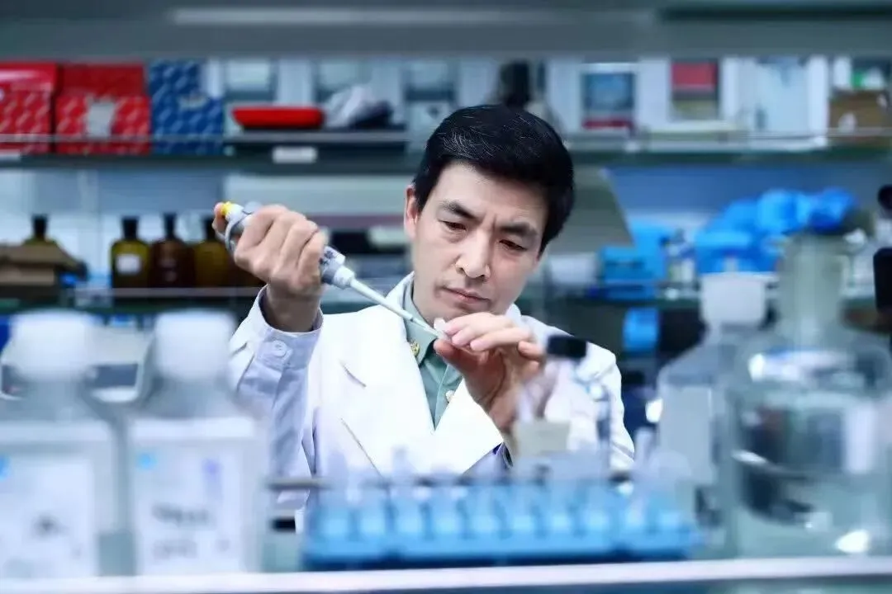

诚招专职科研岗/博士后|陆军军医大学/昆明医科大学曾春雨教授课题组
原文：https://mp.weixin.qq.com/s?__biz=MzAwMzIzOTk5OQ==&mid=2247528211&idx=2&sn=0156437cd1ce604949d7cc195c05eddc&chksm=9b3c1643ac4b9f550579b627b33a4438f5cd13ef08e4a164894479641bdc67fde2999b3018f3#rd 合集：求职/求学/招聘
01
写在前面
我们长期发布招聘/求职板块(甚至我给自己都发了求职：Biomamba求职| 国奖+4篇一作SCI)，欢迎各位老师/老板欢迎联系~我们也在招贤纳士：欢迎大家来生信基地兼职/工作/参观。其它需要求职的小伙伴也欢迎把简历发给我们[Biomamba_yunying]，大家一起找工作/学习。用人单位也可以联系我们免费刊登招聘信息~
02
ABOUT US
一、课题组简介
曾春雨，长江学者特聘教授、国家杰出青年科学基金获得者、 国家重点研发计划和973项目的首席，美国心脏学院（ACC）基础领域杰出科学家奖获得者。陆军军医大学大坪医院心血管内科主任、中科院心血管病中心主任。

担任中国医师协会心血管内科医师分会副会长，教育部（老年心脑血管病）重点实验室主任 、全军急危重症救治重点实验室副主任、重庆市心血管病研究所所长、重庆市高血压研究重点实验室主任。此外，还担任亚洲心脏协会基础与转化专委会主委、中国生理学会整合生理专委会候任主任委员、重庆市心血管病专业委员会主任委员等。
曾春雨教授长期工作在临床一线，在冠脉介入治疗方面造诣深厚，是国家心血管病众多指南、共识的制定专家。在开展临床RCT研究同时，开展应用基础和转化研究，尤其对于“高血压病、心肌的损伤修复和再生 ”开展系统深入的研究，取得了系列原创性学术成果，他在高血压GRK4研究成果被美国高血压学会评为2015年度最具转化前景的工作之一，美国NIH的STTR项目委员会将其推荐为年度具有研发前景的项目之一。他在心肌再生的研究成果被Nat Rev Cardiol述评，并被列为2017年度心脏再生领域的5个里程碑式（milestone）进展之一；研究成果先后评为2017、2023年度中国心血管病十大科学研究。系列研究成果发表在“Sci Transl Med、Nat Commun、JCI、Circulation、Circ Res、Eur Heart J、J Hepatol、Hypertension、Kidney Int”等杂志发表SCI论文180余篇, IF>10的文章45篇，是ESI高被引论文作者。先后获得重庆市自然科学一等奖、重庆市科技进步一等奖等；担任美国Clin Exp Hypertens杂志副主编、国外Hypertension等10余种国外SCI杂志编委、中华心血管病杂志、中华高血压杂志编委或副主编，获“全国科技先进工作者”等荣誉。团队为“国家自然基金委创新群体、教育部创新研究团队”，是国家心血管疾病国际合作基地。指导的学生多人次获得“国家优青、重庆杰青、青年托举工程、重庆英才”。
二、课题组主要研究领域
（1）高血压发病机制；
（2）心血管损伤修复与再生；
（3）极端环境对心血管病的影响
03
JOIN US
一、应聘条件、名额和工作地点
专职科研岗
（ 1）具有博士学历（特别优秀可放宽至硕士），以第一作者身份发表高水平SCI学术论文优先；
（2）具有医学、分子生物学、生物信息学、材料学等基础相关专业学位或研究背景（以发表研究文章为准）。
（3）首批拟招聘15人，招满为止。
（4）工作地点：重庆市或昆明市。
博士后
（ 1）35周岁（含）以下，具有或近期将取得博士学位（医学、生物学及相关专业）；
（2）以第一作者在相关领域重要国际期刊发表过研究论文；
（3）科学态度严谨，有良好的团队合作精神，能积极协助指导实验室其他人员。
（4）博士后名额不限，长期有效。
（5）工作地点：重庆市或昆明市
二、薪酬待遇
博士后
全职在站从事博士后研究的人员，享受医院职工待遇，在站两年期间，医院提供120万元经费支持，包括：工资、绩效和五险一金30万元/年；博士后定向资助经费16万元等。
专职科研岗****
专职科研系列为医院正式聘用职员，根据考核情况发放 15-30万元/年，由基本工资、基础性绩效工资组成；此外，根据工作成果各类奖励绩效另行发放，医院负责购买五险（包含缴纳医疗、失业、养老、生育、工伤保险）、住房公积金等。

应聘材料
请将本人简历、研究工作经历、及其它能证明科研能力的相关文件发送到曾女士邮箱：zlp1116@foxmail.com，邮件主题注明“报名博士后+姓名”“报名专职科研岗+姓名”；报名者的申请材料会严格保密，初审通过者将近期安排面试。

如何联系我们

 公众号后台消息回复不便，这里给大家留一下领取资料及免费服务器(免费两周学习版上架啦~)的微信号 ，方便各位随时交流（别问在么，添加时直接说来意）。同时我们也构建了交流群矩阵，欢迎大家入群讨论。
公众号后台消息回复不便，这里给大家留一下领取资料及免费服务器(免费两周学习版上架啦~)的微信号 ，方便各位随时交流（别问在么，添加时直接说来意）。同时我们也构建了交流群矩阵，欢迎大家入群讨论。
大家可以阅读完这几篇之后添加给生信入门初学者的小贴士 如何搜索公众号过往发布内容
已有生信基地联系方式的同学无需重复添加

 您点的每个赞和在看，我都认真当成了喜欢
您点的每个赞和在看，我都认真当成了喜欢